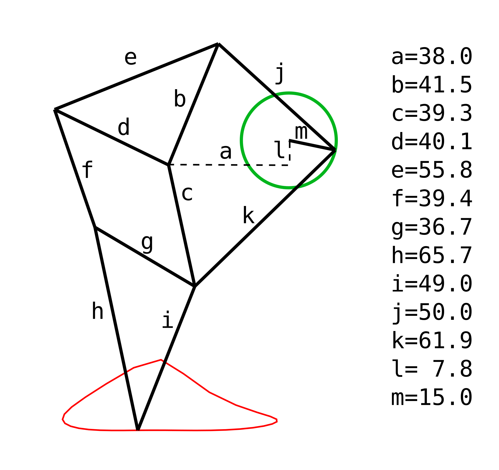

Este programa intenta simular la pata de la Strandbeest, una criatura cinética creada por Theo Jansen. Podés descargarlo acá. Está basado en las medidas que él mismo publicó:

Después de hacer la pata suelta, traté de ensamblar dos de esas en este bicho. Acá podés descargar el programa. Para mover a la simpática bestia, presioná la 'a' y la 'd'.
Un día vi la historia de estas bestias mecánicas en 34 Years Of Strandbeest Evolution, y me parecieron altas criaturas para llevarlas a p5.js.
Seguramente lo hice de la forma más ineficiente y rebuscada posible, pero fue interesante hacerlo poco a poco utilizando solamente nociones bastante elementales de geometría analítica.
El desafío es tratar de simular una de estas bestias de forma más realista, o con un diseño más lindo, o lo que pinte.